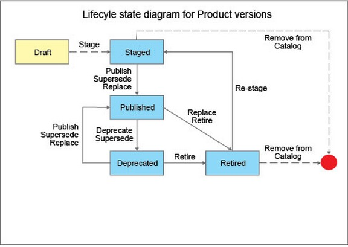
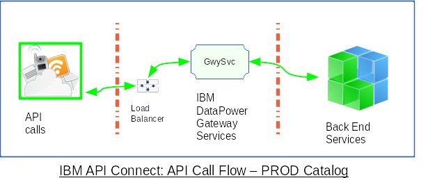
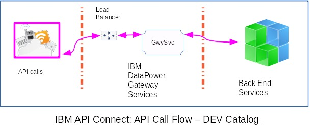
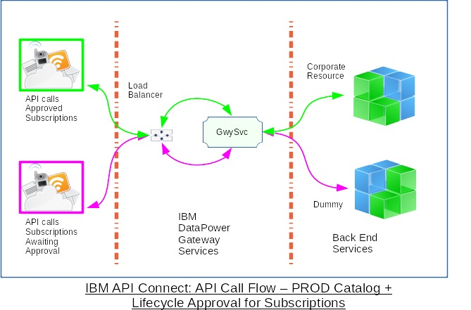
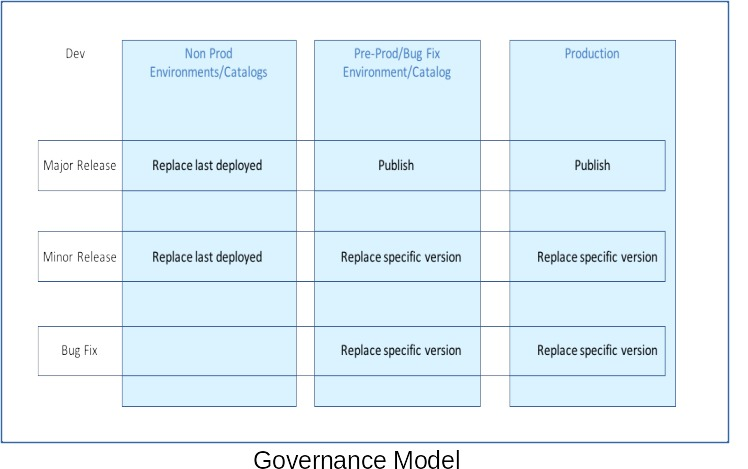

Governance & Version Control for API Products¶
IBM API Connect: Governance Models¶
Ravi Ramnarayan
© IBM v1.51 2021-04-20
Goals¶
- Ensure business continuity while publishing new versions of API Products
- Control consumer subscriptions to API Products
- Allow API provider teams to develop and test API quickly
Collateral effects¶
- Deprecate and Retire API Products gracefully
API Product Lifecycle¶
The diagram below is advertisement to lead you to the core of API management The Product lifecycle.

You are familiar with publishing API Products. You may not have looked at Deprecate and Retire while racing towards implementation. In addition to explicit Deprecation, you can do the same implicitly by Superseding a Product with another Product. Similarly, Replacing a Product with another Product will Retire the existing API Product.
Note: Replacing a Product with another Product could be a new version of the same Product or a completely different Product.
API Connect options¶
You can configure API Connect (APIC) to suit your needs.
Do you want strict version control for API Products?¶
Creating and configuring Catalogs contains steps to enable Production Mode. Once enabled, you must publish new versions of API Products. You will not be able to publish API Products with the same version number as existing products.

Note: You can enable Production Mode for catalogs even in non production environments, if you want to enforce versions for API Products.
Do you want API providers to develop and test API quickly?¶
If you do not enable Production Mode for a catalog, API developers might find it easier to publish new iterations.

Note: You can disable Production Mode for catalogs even in production installations, if you do not want to enforce versions for API Products.
Do you want to control consumer access to corporate resources?¶
Managing the application lifecycle is available in APIC v5. If you have used this feature in APIC v5, you can continue to use it with API Connect v5 compatible (v5c) gateway services.

Orange API calls from consumer application with approved subscriptions reach the corporate resource. Blue API calls from subscriptions without approvals receive response from a dummy endpoint. You will have to encode logic in the gateway script to test the context variable client.app.lifecycle-state and direct the request to the appropriate endpoint.
Note: Though Application Lifecycle is not fully documented for the new API Gateway service, the context variable
client.app.lifecycle-statecarriesPRODUCTIONorDEVELOPMENTwhen Application Lifecyle is enabled for the Catalog.
Versions for API Products & API definitions¶
Governance Model¶
The Governance Model recommends operations to effect changes and guidelines to assign versions.
- The Version aspect applies to API Definitions and API Products
If you want to enforce versions you should enable Production Mode for the Catalogs in the Production or PreProd environments. You might want to disable Production Mode in lower environments to allow free rein to API developers. - The Operations aspect applies to API Products
The Operation comprises the publish verb and associated options. You should compose and validate the command line before automating it in a pipeline. The Governance Model does not show an operation for Bug Fix in Non Prod. You might wish to use the operation Replace last deployed similar to Major/Minor Release.

Note: The Governance matrix is an approach which you should modify to suit your needs.
- Major Release: Increment the major segment of the version for API breaking changes such as changes to API endpoints, invocation parameters or payload syntax. For example, change the version from 1.1.4 -> 2.0.0. The new version of the API could be be published to the UAT and PROD catalogs with subscriptions migrated later. Once all the subscriptions are migrated, the older version of the API should be retired. The sequence of operations could be:
- Publish v2.0.0
- Deprecate v1.1.4
Note: Publish supersede combines publish and deprecate in one operation.
- Migrate subscriptions from v1.1.4 to v2.0.0
- Retire v1.1.4
You can send email notices to consumers to keep them informed.
- Minor Release: Increment the minor segment of the version for non-breaking changes such as an optional calling parameter. For example, change the version from 1.0.0 -> 1.1.0. You can replace the old version with the new, migrate subscriptions and retire the old version in single operation.
- Bug Fix: For bug fixes and/or patches to the API implementation which do not affect the API interface, you may increment the last segment in the version.
API, API Products & Versions¶
API and API Products have different life cycles. The table below illustrates an approach. You can assign the version numbers according to your organizations practices.
| API Product 1.0.0 | API Product 1.1.0 | API Product 2.0.0 | Notes | |
|---|---|---|---|---|
| API-a | 1.0.0 | 1.0.0 | 1.0.1 | One bug fix change to API-a |
| API-b | 1.0.0 | 1.1.0 | 1.1.0 | One minor change to API-b |
| API-c | 1.1.0 | 1.2.0 | 2.0.0 | Minor & major changes to API-c |
| API-d | n/a | n/a | 3.1.0 | API-d is new to Product |
API Version
API Definitions exist within a Provider Organization. See API Connect concepts. API Connect allows you to have multiple versions of the same API which is typical during transitions. During steady states, you should try to have only one version of an API within a Provider Organization.
Note: API and API Definition are synonymous. API belong to a Provider Organization and could be used in zero or many API Products.
Should the API URI contain the version number?¶
API Connect allows you to implement API URI according to your corporate standards. There are several articles on this topic: Some Yes, some No-No and a few fence straddlers. A small sample of articles:
- Best Practices for Versioning REST APIs - Better Programming - Medium
- REST API versioning for Azure DevOps Services (and TFS) - Azure DevOps | Microsoft Docs
- REST API Versioning - Is There a Right Answer? - DZone Integration
- rest - Best practices for API versioning? - Stack Overflow
I do not like version numbers in the API URI because my consumers will be forced to make changes when I bump the version number. What can API Connect do for me?¶
API Connect helps you provide a smooth experience for your consumers. You can implement API URI without version numbers and publish new versions as long as you require consumers to subscribe to plans. API Connect will direct the consumer invocations based on the Subscription ClientId. Consider the following scenario:
- api:v1 & api:v2 share the same API name and URI (base path) which does not contain the version number
- api:v1 is in product product:v1, api:v2 is in product product:v2
- both products are in the same Provider Organization & Catalog
- both products are active and require subscriptions to plans
- both api:v1 & api:v2 require ClientId in the HTTP header
- consumer-app-1 subscribes to product:v1-plan, consumer-app-2 subscribes to product:v2-plan
Q: Will calls from consumer-1 reach api:v1 & calls from consumer-2 reach api:v2 ?
A: Yes & Yes.
Q: Really, even though the plan names are the same?
A: Yes. api:v1 & api:v2 have different Client ID's which are tied to different subscriptions.
Yes, this is hard to believe. I had to prove it to myself. Should you?
- Clone api:v1 to api:v2
Invoke a back end service which delivers a different result
- Clone product:v1 to product:v2
Relate product:v2 to api:v2
- Publish both products to the same Gateway Service
Note: Both products offer the same Paths and Operations
- Subscribe consumer-app-1 to product:v1-plan
- Subscribe consumer-app-2 to product:v2-plan
- Invoke the each API with the appropriate app Client ID
Do you see results from two different back end services?Note: If you clone (copy) api:v1 to api:v2 and use the API Designer Test feature, calls will go to api:v1 as the Client ID is still the same. To avoid this problem, publish api:v2, create a new consumer application and use an external tool such as Postman with the new consumer app Client ID.
Lifecycle mechanics¶
Let's walk through a few scenarios and illustrate commands which can be used for DevOps in Production. The scenarios below traverse Production and Staging environments. You are likely to have different settings in each environment. For example, credentials and back end services are likely to be different in Production and lower installations. You should ensure the promotion processes accommodate the differences.
Scenario A¶
| Env | Catalogs | API Products | API Definitions | Subscriptions |
|---|---|---|---|---|
| Production | ProdMode-Enabled | Version Reqd | Version Reqd | Required |
| Staging | ProdMode-Enabled | Version Reqd | Version Reqd | Required |
| Development | ProdMode-Disabled | Version Opt. | Version Opt. | Optional |
Pro¶
- Enforces version control for API Products & Definitions in Production
- Enables rate limits based on Subscription ClientId in Production
- Allows API developers freedom to create, publish and test API quickly
Contra¶
- Version control for API Definitions and API Products is confusing
API Products & Definitions travel on separate tracks which can intersect. For example, you might create a new version of an API Definition. When you include the new API version in an existing Product, you should assign a new version to the API Product. - Assigning version numbers is tricky
API developer teams have to reach consensus on the practice of assigning version numbers.
Scenario B¶
| Env | Catalogs | API Products | API Definitions | Subscriptions |
|---|---|---|---|---|
| Production | ProdMode-Disabled | Version Opt. | Version Opt. | Required |
| Staging | ProdMode-Disabled | Version Opt. | Version Opt. | Required |
| Development | ProdMode-Disabled | Version Opt. | Version Opt. | Optional |
Pro¶
- Enables rate limits based on Subscription ClientId in Production
- Allows API developers freedom to create, publish and test API quickly in all environments including Production
Contra¶
- Does not enforce version control for API Products & Definitions in Production
Lack of version control can lead to problems. The situation can become complex if some API developer teams decide to use versions.
Scenario C¶
| Env | Catalogs | API Products | API Definitions | Subscriptions |
|---|---|---|---|---|
| Production | ProdMode-Disabled | Version Opt. | Version Opt. | Optional |
| Staging | ProdMode-Disabled | Version Opt. | Version Opt. | Optional |
| Development | ProdMode-Disabled | Version Opt. | Version Opt. | Optional |
Pro¶
- Allows API developers freedom to create, publish and test API quickly in all environments including Production
Contra¶
- Does not enforce version control for API Products & Definitions in Production
Lack of version control can lead to problems. The situation can become complex if some API developer teams decide to use versions. - Cannot apply rate limits based on Subscription ClientId in Production
You could enforce rate limits through other features of DataPower.
Summary¶
- IBM API Connect supports the API Product Lifecyle and helps you tailor different Governance Models for Production & non production installations.
- IBM API Connect gives you the option to design your API without embedding the version number in the URI. You could include the version number in the URI if it suits your business practice.
Next Step -- DevOps¶
In a future article, we will present how you could manage API Products, Plans and Consumer Subscriptions at scale using DevOps.